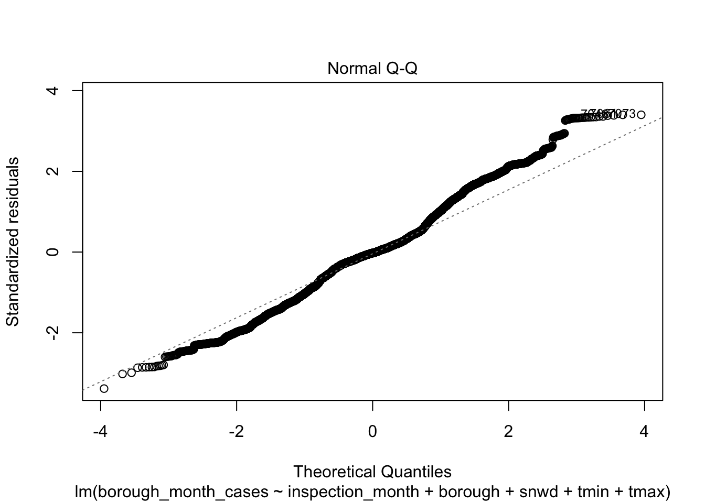
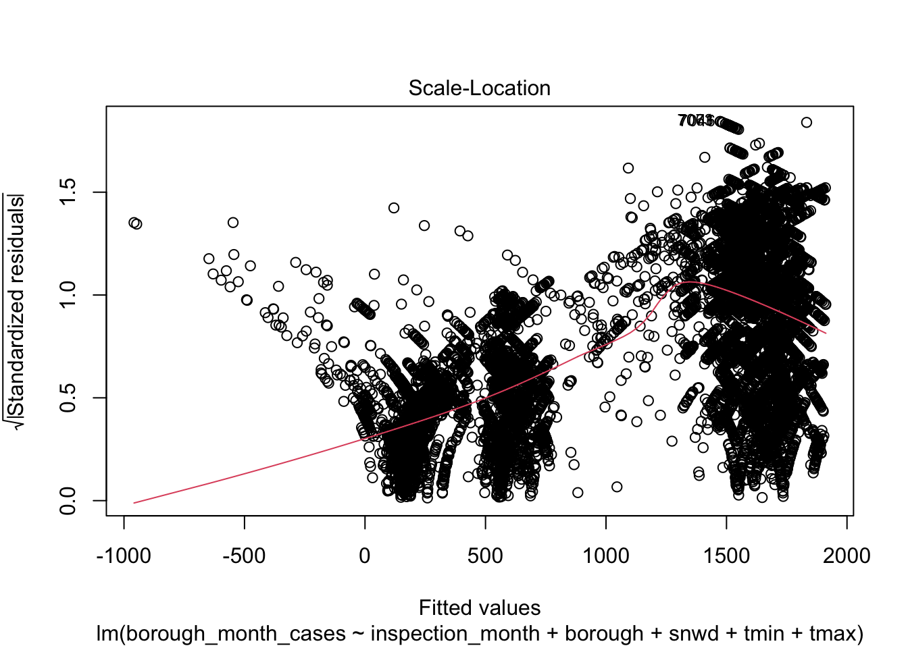
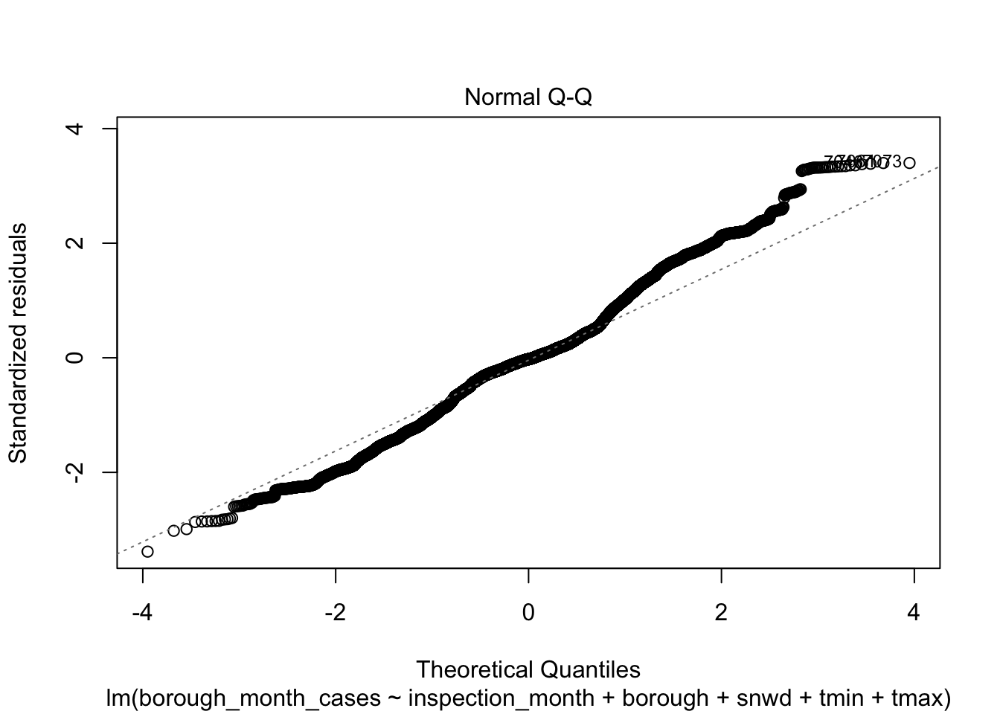
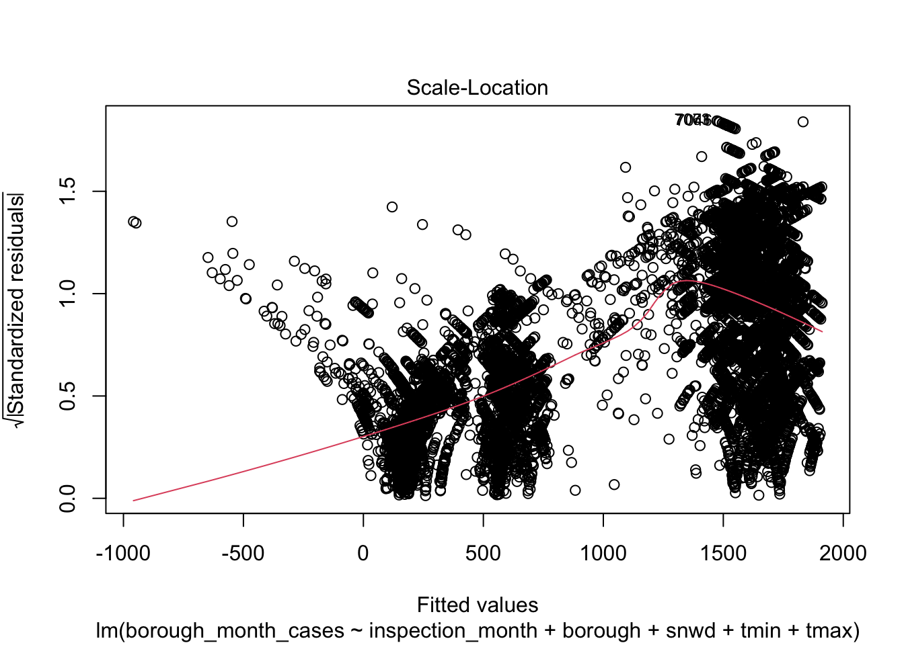

library(tidyverse)
library(readxl)
url_2012 = "https://raw.githubusercontent.com/YijiaJiang/p8105_final_project_data/main/rat_2012.csv"
rat_2012 = read_csv(url(url_2012))
url_2013 = "https://raw.githubusercontent.com/YijiaJiang/p8105_final_project_data/main/rat_2013.csv"
rat_2013 = read_csv(url(url_2013))
url_2014 = "https://raw.githubusercontent.com/YijiaJiang/p8105_final_project_data/main/rat_2014.csv"
rat_2014 = read_csv(url(url_2014))
url_2015 = "https://raw.githubusercontent.com/YijiaJiang/p8105_final_project_data/main/rat_2015.csv"
rat_2015 = read_csv(url(url_2015))
url_2016 = "https://raw.githubusercontent.com/YijiaJiang/p8105_final_project_data/main/rat_2016.csv"
rat_2016 = read_csv(url(url_2016))
url_2017 = "https://raw.githubusercontent.com/YijiaJiang/p8105_final_project_data/main/rat_2017.csv"
rat_2017 = read_csv(url(url_2017))
url_2018 = "https://raw.githubusercontent.com/YijiaJiang/p8105_final_project_data/main/rat_2018.csv"
rat_2018 = read_csv(url(url_2018))
url_2019 = "https://raw.githubusercontent.com/YijiaJiang/p8105_final_project_data/main/rat_2019.csv"
rat_2019 = read_csv(url(url_2019))
url_2020 = "https://raw.githubusercontent.com/YijiaJiang/p8105_final_project_data/main/rat_2020.csv"
rat_2020 = read_csv(url(url_2020))
url_2021 = "https://raw.githubusercontent.com/YijiaJiang/p8105_final_project_data/main/rat_2021.csv"
rat_2021 = read_csv(url(url_2021))
rat = bind_rows(rat_2012, rat_2013, rat_2014, rat_2015, rat_2016, rat_2017, rat_2018, rat_2019, rat_2020, rat_2021) %>%
select(-...1) %>%
mutate(inspection_month_n = recode(inspection_month,
"Jan" = 1,
"Feb" = 2,
"Mar" = 3,
"Apr" = 4,
"May" = 5,
"Jun" = 6,
"Jul" = 7,
"Aug" = 8,
"Sep" = 9,
"Oct" = 10,
"Nov" = 11,
"Dec" = 12)) %>%
mutate(date = paste(inspection_year, inspection_month_n, inspection_day, sep = "-")) %>%
mutate(date = as.Date(date,format = "%Y-%m-%d")) %>%
mutate(inspection_ym = paste(inspection_year, inspection_month_n)) %>%
filter(result != "Passed")
Variable selection
cases = rat %>%
select(inspection_ym, borough) %>%
group_by(inspection_ym, borough) %>%
add_count(borough, inspection_ym, name = "borough_month_cases") %>%
distinct()
rat_tidy = rat %>%
select(borough, inspection_ym, inspection_month, prcp, snow, snwd, tmin, tmax) %>%
mutate(borough = as.factor(borough), inspection_month = as.factor(inspection_month),
prcp = as.numeric(prcp), snow = as.numeric(snow), snwd = as.numeric(snwd),
tmin = as.numeric(tmin), tmax = as.numeric(tmax))
cases_borough_month = merge(x = rat_tidy, y = cases, by = c("inspection_ym", "borough")) %>% distinct()
Linear Regression Model
original_lm = lm(borough_month_cases ~ inspection_month + borough + prcp + snow + snwd + tmin + tmax, data = cases_borough_month)
broom::tidy(original_lm) %>%
knitr::kable()
| (Intercept) |
1873.4436306 |
27.3206190 |
68.5725177 |
0.0000000 |
| inspection_monthAug |
67.6687087 |
28.3015730 |
2.3909876 |
0.0168175 |
| inspection_monthDec |
-137.1424231 |
25.3069012 |
-5.4191709 |
0.0000001 |
| inspection_monthFeb |
-73.5995427 |
26.9943281 |
-2.7264817 |
0.0064101 |
| inspection_monthJan |
-294.4252757 |
27.3464770 |
-10.7664792 |
0.0000000 |
| inspection_monthJul |
-37.9276441 |
28.9066837 |
-1.3120718 |
0.1895195 |
| inspection_monthJun |
-107.0037479 |
26.4660896 |
-4.0430509 |
0.0000531 |
| inspection_monthMar |
-13.4898442 |
24.4064295 |
-0.5527168 |
0.5804670 |
| inspection_monthMay |
-107.4502669 |
24.5501947 |
-4.3767582 |
0.0000121 |
| inspection_monthNov |
-178.4379520 |
24.7775425 |
-7.2016001 |
0.0000000 |
| inspection_monthOct |
-97.0274330 |
24.3296120 |
-3.9880387 |
0.0000670 |
| inspection_monthSep |
-80.7607565 |
26.2847236 |
-3.0725359 |
0.0021270 |
| boroughBrooklyn |
-98.8861912 |
14.7682240 |
-6.6958756 |
0.0000000 |
| boroughManhattan |
-196.8621192 |
14.5208652 |
-13.5571893 |
0.0000000 |
| boroughQueens |
-1138.3986766 |
15.0892393 |
-75.4444050 |
0.0000000 |
| boroughStaten Island |
-1541.7109389 |
15.8627817 |
-97.1904531 |
0.0000000 |
| prcp |
0.2424856 |
0.5067128 |
0.4785464 |
0.6322695 |
| snow |
-0.0794051 |
0.4641316 |
-0.1710831 |
0.8641611 |
| snwd |
-2.5590942 |
0.1392333 |
-18.3798971 |
0.0000000 |
| tmin |
5.0376393 |
2.1275361 |
2.3678279 |
0.0179077 |
| tmax |
-5.8401190 |
1.7938667 |
-3.2556036 |
0.0011345 |
step_lm = step(original_lm, direction = "backward")
## Start: AIC=161116.5
## borough_month_cases ~ inspection_month + borough + prcp + snow +
## snwd + tmin + tmax
##
## Df Sum of Sq RSS AIC
## - snow 1 8590 3749058971 161115
## - prcp 1 67206 3749117588 161115
## <none> 3749050382 161117
## - tmin 1 1645359 3750695740 161120
## - tmax 1 3110451 3752160833 161125
## - inspection_month 11 73920211 3822970593 161344
## - snwd 1 99139453 3848189834 161448
## - borough 4 4595721683 8344772065 171347
##
## Step: AIC=161114.5
## borough_month_cases ~ inspection_month + borough + prcp + snwd +
## tmin + tmax
##
## Df Sum of Sq RSS AIC
## - prcp 1 62323 3749121295 161113
## <none> 3749058971 161115
## - tmin 1 1655893 3750714864 161118
## - tmax 1 3102769 3752161740 161123
## - inspection_month 11 73923274 3822982245 161342
## - snwd 1 99671968 3848730939 161448
## - borough 4 4596003527 8345062498 171345
##
## Step: AIC=161112.8
## borough_month_cases ~ inspection_month + borough + snwd + tmin +
## tmax
##
## Df Sum of Sq RSS AIC
## <none> 3749121295 161113
## - tmin 1 1756033 3750877328 161117
## - tmax 1 3258943 3752380238 161122
## - inspection_month 11 73936789 3823058083 161341
## - snwd 1 99685310 3848806604 161447
## - borough 4 4596050363 8345171658 171344
broom::tidy(step_lm) %>%
knitr::kable()
| (Intercept) |
1874.729332 |
27.0472056 |
69.3132356 |
0.0000000 |
| inspection_monthAug |
67.106505 |
28.2533165 |
2.3751727 |
0.0175554 |
| inspection_monthDec |
-137.225455 |
25.2958913 |
-5.4248120 |
0.0000001 |
| inspection_monthFeb |
-73.739189 |
26.9807933 |
-2.7330252 |
0.0062842 |
| inspection_monthJan |
-294.727101 |
27.3337270 |
-10.7825435 |
0.0000000 |
| inspection_monthJul |
-37.982162 |
28.8645388 |
-1.3158763 |
0.1882392 |
| inspection_monthJun |
-107.314842 |
26.4406771 |
-4.0587025 |
0.0000496 |
| inspection_monthMar |
-13.707427 |
24.4000871 |
-0.5617778 |
0.5742773 |
| inspection_monthMay |
-107.483088 |
24.5442795 |
-4.3791503 |
0.0000120 |
| inspection_monthNov |
-178.546535 |
24.7725593 |
-7.2074319 |
0.0000000 |
| inspection_monthOct |
-97.302910 |
24.3214678 |
-4.0007006 |
0.0000635 |
| inspection_monthSep |
-81.074771 |
26.2638012 |
-3.0869397 |
0.0020266 |
| boroughBrooklyn |
-98.873936 |
14.7666561 |
-6.6957567 |
0.0000000 |
| boroughManhattan |
-196.900580 |
14.5196322 |
-13.5609896 |
0.0000000 |
| boroughQueens |
-1138.386165 |
15.0881609 |
-75.4489676 |
0.0000000 |
| boroughStaten Island |
-1541.712491 |
15.8614541 |
-97.1986854 |
0.0000000 |
| snwd |
-2.560792 |
0.1389341 |
-18.4316953 |
0.0000000 |
| tmin |
5.165267 |
2.1114298 |
2.4463359 |
0.0144450 |
| tmax |
-5.929748 |
1.7792958 |
-3.3326375 |
0.0008627 |
#model_interact = lm(borough_month_cases ~ inspection_month + borough + snow + prcp + snwd + tmin + tmax , data = cases_borough_month)
#broom::tidy(model_interact) %>% knitr::kable()
set.seed(100)
plot(step_lm)
 
